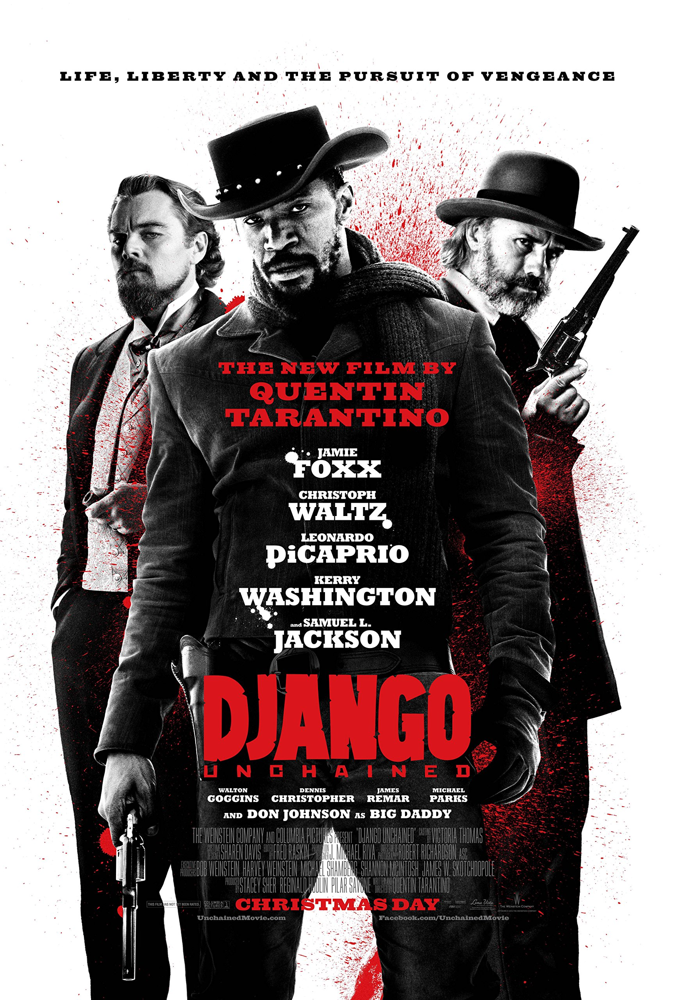

1- Reservoir Dogs :
Genre : Crime, Drama, Thriller
Starring : Harvey Keitel, Tim Roth, Michael Madsen
A group of thieves assemble to pull of the perfect diamond heist. It turns into a bloody ambush when one of the men turns out to be a police informer. As the group begins to question each other's guilt, the heightening tensions threaten to explode the situation before the police step in.

2- Pulp Fiction :
Genre : Crime, Drama
Starring : John Travolta, Uma Thurman, Samuel L. Jackson, Bruce Willis
Jules Winnfield and Vincent Vega are two hitmen out to retrieve a suitcase stolen from their employer, mob boss Marsellus Wallace. Wallace has also asked Vincent to take his wife Mia out a few days later when Wallace himself will be out of town. Butch Coolidge is an aging boxer who is paid by Wallace to lose his next fight. Honey Bunny and Pumpkin are a couple of young lovers and small time thieves who decide they need a change of venue. The lives of these seemingly unrelated people are woven together in a wildly entertaining and exhilarating motion picture adventure that both thrills and amuses.

3- Jackie Brown :
Genre : Crime, Drama, Thriller
Starring : Pam Grier, Samuel L. Jackson, Robert Foster
When flight attendant Jackie Brown (Pam Grier) is busted smuggling money for her arms dealer boss, Ordell Robbie (Samuel L. Jackson), agent Ray Nicolette (Michael Keaton) and detective Mark Dargus (Michael Bowen) want her help to bring down Robbie. Facing jail time for her silence or death for her cooperation, Brown decides instead to double-cross both parties and make off with the smuggled money. Meanwhile, she enlists the help of bondsman Max Cherry (Robert Forster), a man who loves her.
4- Kill Bill Volume 1 & 2 :
Genre : Crime, Drama, Thriller
Starring : Uma Thurman, David Carradine, Daryl Hannah, Lucy Liu, Michale Madsen
A former assassin, known simply as The Bride (Uma Thurman), wakes from a coma four years after her jealous ex-lover Bill (David Carradine) attempts to murder her on her wedding day. Fueled by an insatiable desire for revenge, she vows to get even with every person who contributed to the loss of her unborn child, her entire wedding party, and four years of her life. After devising a hit list, The Bride sets off on her quest, enduring unspeakable injury and unscrupulous enemies.

5- Death Proof :
Genre : Action, Adventure, Thriller
Starring : Kurt Russel, Zoë Bell, Rosario Dawson
Stuntman Mike (Kurt Russell) is a professional body double who likes to take unsuspecting women for deadly drives in his free time. He has doctored his car for maximum impact; when Mike purposely causes wrecks, the bodies pile up while he walks away with barely a scratch. The insane Mike may be in over his head, though, when he targets a tough group of female friends, including real-life stuntwoman Zoe Bell (who served as Uma Thurman's double in "Kill Bill"), who plays herself.
6- Inglorious Basterds :
Genre : Adventure, Drama, War
Starring : Brad Pitt, Diane Kruger, Eli Roth
It is the first year of Germany's occupation of France. Allied officer Lt. Aldo Raine (Brad Pitt) assembles a team of Jewish soldiers to commit violent acts of retribution against the Nazis, including the taking of their scalps. He and his men join forces with Bridget von Hammersmark, a German actress and undercover agent, to bring down the leaders of the Third Reich. Their fates converge with theater owner Shosanna Dreyfus, who seeks to avenge the Nazis' execution of her family.

7- Django Unchained :
Genre : Drama, Western
Starring : Jamie Foxx, Christoph Waltz, Leonardo DiCaprio
Two years before the Civil War, Django (Jamie Foxx), a slave, finds himself accompanying an unorthodox German bounty hunter named Dr. King Schultz (Christoph Waltz) on a mission to capture the vicious Brittle brothers. Their mission successful, Schultz frees Django, and together they hunt the South's most-wanted criminals. Their travels take them to the infamous plantation of shady Calvin Candie (Leonardo DiCaprio), where Django's long-lost wife (Kerry Washington) is still a slave.
8- The Hateful 8 :
Genre : Crime, Drama, Mystery
Starring : Samuel L. Jackson, Kurt Russel, Jennifer Jason Leigh
While racing toward the town of Red Rock in post-Civil War Wyoming, bounty hunter John "The Hangman" Ruth (Kurt Russell) and his fugitive prisoner (Jennifer Jason Leigh) encounter another bounty hunter (Samuel L. Jackson) and a man who claims to be a sheriff. Hoping to find shelter from a blizzard, the group travels to a stagecoach stopover located on a mountain pass. Greeted there by four strangers, the eight travelers soon learn that they may not make it to their destination after all.
9- Once Upon a Time In Hollywood :
Genre : Comedy, Drama
Starring : Leonardo DiCaprio, Brad Pitt, Margot Robbie
Actor Rick Dalton gained fame and fortune by starring in a 1950s television Western, but is now struggling to find meaningful work in a Hollywood that he doesn't recognize anymore. He spends most of his time drinking and palling around with Cliff Booth, his easygoing best friend and longtime stunt double. Rick also happens to live next door to Roman Polanski and Sharon Tate -- the filmmaker and budding actress whose futures will forever be altered by members of the Manson Family.